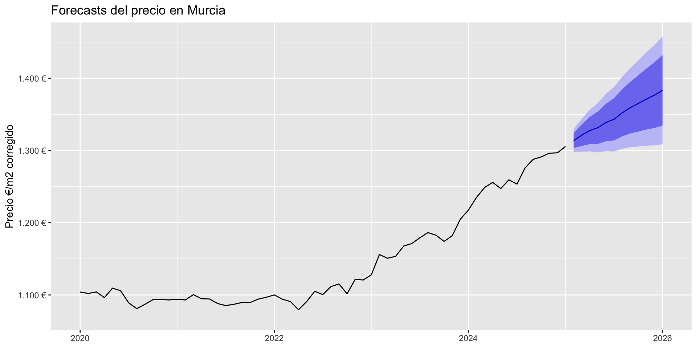
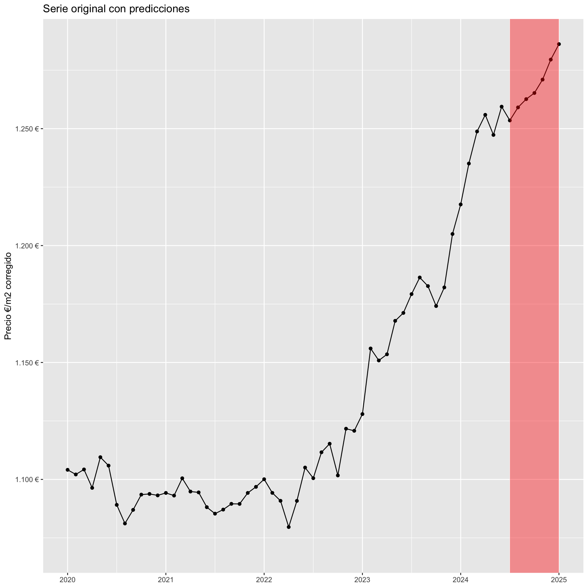
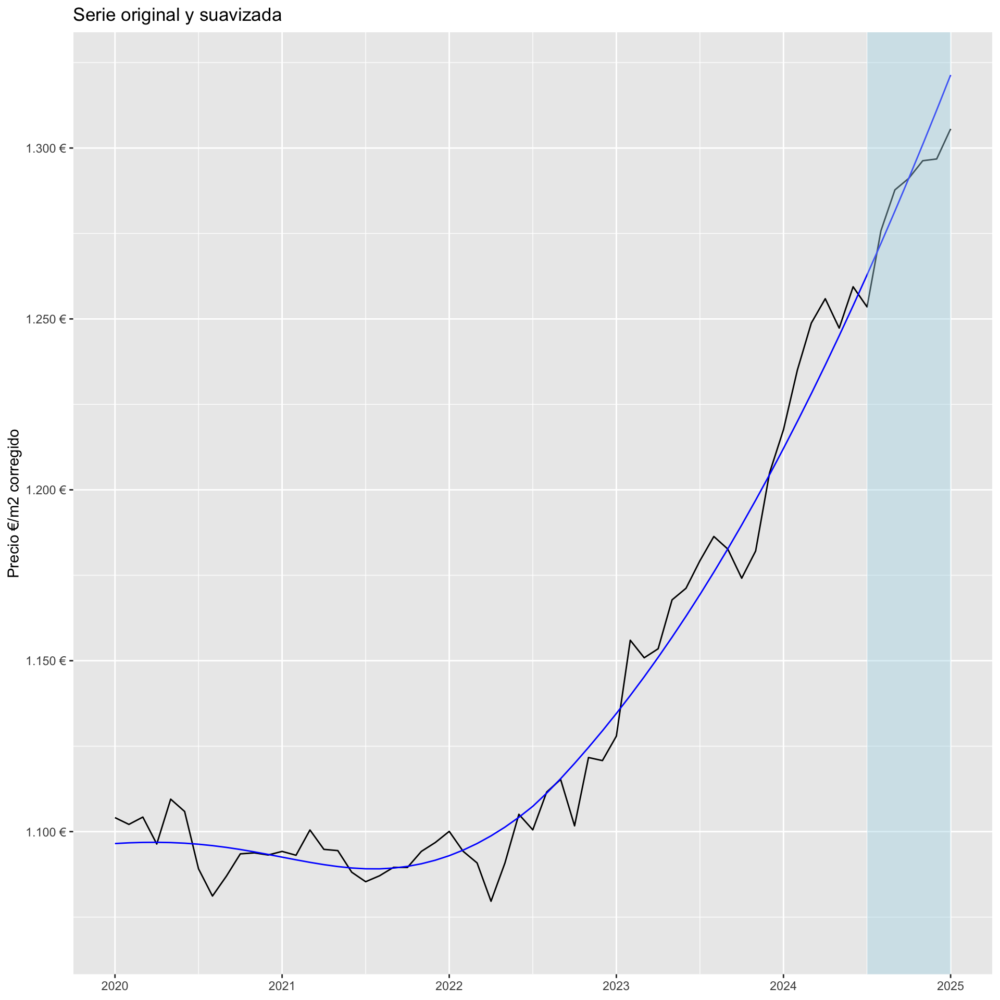
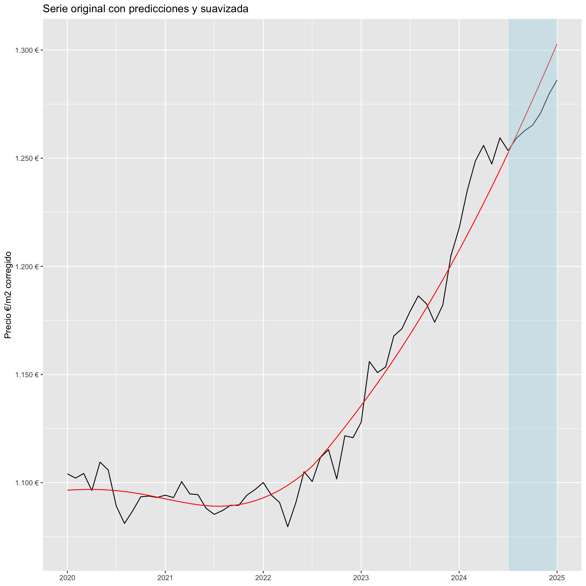
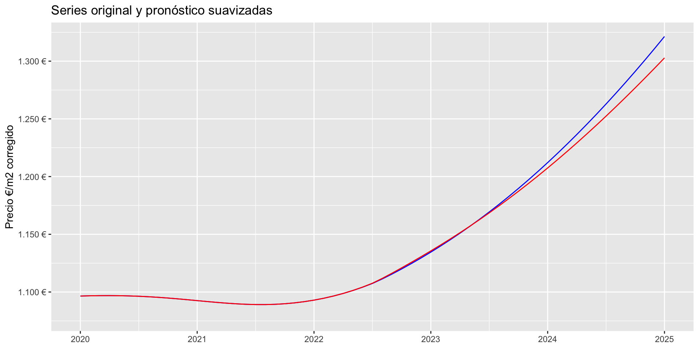

Key: <provincia, municipio, m_y>
provincia municipio m_y precio_em2
<char> <char> <yearmon> <num>
1: Murcia Murcia Apr 2024 1255.914
2: Murcia Murcia May 2024 1247.321
3: Murcia Murcia Jun 2024 1259.409
4: Murcia Murcia Jul 2024 1253.514
5: Murcia Murcia Aug 2024 1275.842
6: Murcia Murcia Sep 2024 1287.753
7: Murcia Murcia Oct 2024 1291.150
8: Murcia Murcia Nov 2024 1296.288
9: Murcia Murcia Dec 2024 1296.798
10: Murcia Murcia Jan 2025 1305.597R en la empresa
Antonio J. Perán
Un poco de quién soy y mi relación con R
- Estudié matemáticas en la UMU.
- Mi primer contacto con R fue en el Servicio de Apoyo Estadístico de la Universidad de Murcia.
- Estudié el máster en Tecnologías de datos masivos: Big Data de la UMU.
- En mi TFM trabajé con la empresa murciana Prosur usando R y los datos de una nariz electrónica para determinar si unas salsas producidas por ellos estaban o no contaminadas con microorganismos.
- Actualmente trabajo Okuant, un fondo de inversión inmobiliario con sede en Madrid.
- Más actualmente soy alumno de doctorado en el programa de Ciencias Forenses.
¿De qué vamos a hablar?
- Un par de casos de uso de R en Okuant.
- Una demo de forecasting de series temporales de stock con series de yahoo Finanzas.
Okuant
Qué es
- Okuant es un fondo de inversión inmobiliario con sede en Madrid que opera en toda España. También tenemos oficinas en Barcelona y Sevilla.
- De forma muy resumida, el negocio consiste en comprar grandes carteras de inmuebles a bancos y ponerlos a la venta.
- También realizamos labores de gestión de activos (inmuebles) para otros fondos, lo que se conoce como servicing.
Departamento de Data Science
El equipo lo formamos 4 personas
- Adrián, físico, Team Lead.
- Michal, economista, Data Scientist.
- Mar, física, Data Scientist.
- Antonio (yo), matemático, Data Scientist.
Casos de uso de R en Okuant
- Definir la arquitectura de la base de datos y ETL
- Crear un modelo de valoración automática de activos (Automated Valuation Model)
- Forecasting de precios por zonas geográficas
- Catalogación de tipologías y zonas buenas (y malas) para inversión
- Extracción de características de activos a través de fuentes de información no estructurada (Text-Mining)
- Reporting: Creación de Dashboards e Informes
Definir la arquitectura de la BBDD y ETL
Objetivos
- Integrar los datos de diversas fuentes en una base de datos centralizada.
- Crear un proceso de carga y transformación rastreable, eficiente y fácilmente reanudable en caso de error.
- Que la base de datos tenga un histórico (backup).
- Tener disponibles las métricas más utilizados por los diversos proyectos.
Fuentes de datos
- Datos de inmuebles y carteras de bancos
- APIs (Catastro, INE, IGN)
- Nuestro propio CRM (Activos y Ofertas)
Datos de inmuebles y carteras de bancos
- Son archivos muy pesados, hablamos de millones de filas, Gb’s de información.
- Contienen variables de diversos tipos:
character,numeric,Date,logical. - Al venir de diversas fuentes, hay que unificar ciertas variables, como municipio.
- Contienen datos erróneos que hay que eliminar.
- Contienen datos duplicados (mismo anuncio en el mismo portal o en distintos).
- La gran mayoría no tiene informados ciertos datos necesarios como el distrito, por lo que hay que imputarlo.
APIs
- Catastro: Peticiones a la API de catastro por referencia catastral para obtener la superficie construída, superficie útil, etc.
- INE y webs de ayuntamientos: Librerías como
INEbaseR, o directamente web scraping a webs de ayuntamientos. - IGN: Mapas de provincias, muncipios y distritos en formato
.shp. Una buena librería para trabajar con este tipo de datos es la libreríasf.
Nuestro propio CRM
- Contienen variables de diversos tipos:
character,numeric,Date,logical. - Aunque el dato sí esté informado, hay que unificar criterios en variables como municipio o distrito.
- También se procesan datos de los estados de las ofertas que se hacen para cada inmueble.
Librerías
data.table
- Es una librería muy potente para trabajar con grandes volúmenes de datos, en lugar de
data.frames, las tablas se llamandata.tables. - Tiene una sintaxis muy cómoda para expresar operaciones de datos complejas de forma muy sencilla.
targets
- Una librería reciente para creación de pipelines en R.
- Divide el flujo de datos en targets que dependen unos de otros y almacena los resultados intermedios para poder retomar el proceso en caso de fallo o en caso de modificación de alguno de los targets.
Otras
sfFNNlogger
Targets Visnetwork
Forecasting de precios por zonas geográficas
Objetivo
Obtener predicciones a futuro de la serie de precios medios mensuales de €/m2 para cada municipio con ciertos requisitos:
- Las predicciones deben ser precisas en el largo plazo (6 meses).
- Se dará más prioridad a afinar en el crecimiento o decrecimiento de la serie que a los valores.
- Los pronósticos deben estar disponibles para otros departamentos, para visualización y uso.
La tabla de datos
Básicamente trabajamos con 4 variables: provincia, municipio, m_y (mes y año) y precio_em2.
Los últimos diez valores de la tabla para Murcia serían
Mejor en un gráfico
¿Qué es eso de forecasting?
Predecir valores futuros de una serie temporal con los datos disponibles hasta la fecha, tanto los de la propia serie (autorregresión), como los de otras variables externas que puedan influir en la variable a predecir.
¿Qué modelos hemos utilizado?
- ARIMA
- VAR
- Holt - Winters
- bsts
- XGBoost
¿Cómo entrenamos y evaluamos los distintos modelos?
Los pasos a seguir son
- Cogemos la serie original y eliminamos los 6 últimos valores, que reservamos para testear la capacidad predictiva del modelo.
- Ajustamos cualquier modelo de nuestra elección al subconjunto de la serie seleccionado en el paso anterior.
- Calculamos las predicciones del modelo para los próximos 6 meses.
- Con los 6 valores de pronóstico y los últimos 6 valores de la serie que reservamos, calculamos la métrica de error de nuestra elección, por ejemplo el MAPE.
¿Cómo entrenamos y evaluamos los distintos modelos?

¿Cómo cuantifico cuánto me estoy equivocando?
Nosotros usamos dos métricas, una de ellas ampliamente utilizada y la otra más específica de nuestro caso de uso.
- MAPE (Mean Absolute Percentaje Error): La fórmula es \[\text{MAPE} = \frac{1}{n}\sum_{i=1}^{n}\left\lvert\frac{A_i - F_i}{A_i}\right\lvert\] Donde A son valores reales y F valores pronosticados. Por ejemplo, si el valor real fuese 1500 € y pronosticado 1578 €, el MAPE en este caso daría 0.052, o en porcentaje 5.2 %.
- Diferencia de incrementos: Se suaviza con cualquier método de suavizado (en nuestro caso usamos LOESS) tanto la serie original como la serie original añadidas las predicciones. Se calcula el incremento de ambas series de los últimos 6 meses y se calcula la diferencia \(incremento_{a} - incremento_{f}\).
Gráfico del cálculo de la Diferencia de pendientes
Suavizamos la serie original.

Suavizamos la serie con predicciones.

Gráfico del cálculo de la Diferencia de pendientes
Calculamos la diferencia de los incrementos percentuales de los últimos 6 meses. El resultado sería 0.0060472.
¿Como obtenemos el modelo final?
Los pasos a seguir son
- Cogemos el modelo ya entrenado (o sus hiperparámetros) y la serie original completa.
- Reentrenamos el modelo o reajustamos el modelo a la serie completa.
- Calculamos, ahora sí, pronósticos futuros para nuestra serie de precios.
¿Como obtenemos el modelo final?

Tabla de errores y pronósticos
Finalmente podemos crear una tabla con los pronósticos, el error que habíamos obtenido en test y el posible incremento de la serie de precios.
| MAPE | 1.7 % |
| Feb 2025 | 1314 €/m2 |
| Mar 2025 | 1321.6 €/m2 |
| Apr 2025 | 1328 €/m2 |
| May 2025 | 1331.4 €/m2 |
| Jun 2025 | 1338.8 €/m2 |
| Jul 2025 | 1342.7 €/m2 |
| Inc. próx 6m | 2.84 % |